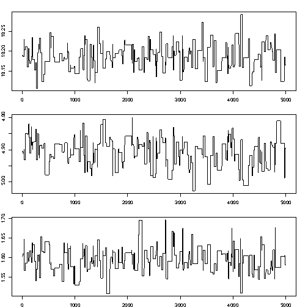
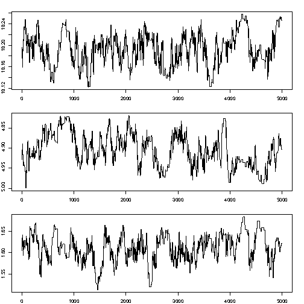

4 Optimization: stochastic methods
4.1 Problems with steepest descent
- (see previous slide:) steepest descent may be very slow
- Main problem: a minimum may be local, other initial values may result in other, better minima
- Cure: apply Gauss-Newton from many different starting points (cumbersome, costly, cpu intensive)
- Global search:
- apply a grid search – curse of dimensionality. E.g. for three parameters, 50 grid nodes along each direction: \(50^3= 125000\)
- apply random sampling (same problem)
- use search methods that not only go downhill:
- Metropolis-Hastings (sampling)
- Simulated Annealing (optimizing)
4.2 Metropolis-Hastings
Why would one want probabilistic search?
- global–unlikely areas are searched too (with small probability)
- a probability distribution is richer than a point estimate:
Gauss-Newton provides an estimate of \(\hat\theta\) of \(\theta\), given data \(y\). What about the estimation error \(\hat\theta - \theta\)? Second-order derivatives give approximations to standard errors, but not the full distribution.
We explain the simplified version, the Metropolis algorithm
Metropolis algorithm
Given a point in parameter space \(\theta\), say \(x_t = (\theta_{1,t},...,\theta_{p,t})\) we evaluate whether another point, \(x'\) is a reasonable alternative. If accepted, we set \(x_{t+1}\leftarrow x'\); if not we keep \(x_t\) and set \(x_{t+1}\leftarrow x_t\).
- if \(P(x') > P(x_t)\), we accept \(x'\) and set \(x_{t+1}=x'\)
- if \(P(x') < P(x_t)\), then
- we draw \(U\), a random uniform value from \([0,1]\), and
- accept \(x'\) if \(U < \frac{P(x')}{P(x_t)}\)
Often, \(x'\) is drawn from some normal distribution centered around \(x_t\): \(N(x_t,\sigma^2 I)\). Suppose we accept it always, then \[x_{t+1}=x_t + e_t\] with \(e_t \sim N(0,\sigma^2 I)\). Looks familiar?
Burn-in, tuning \(\sigma^2\)
- When run for a long time, the Metropolis (and its generalization Metropolis-Hastings) algorithm provide a correlated sample of the parameter distribution
- M and MH algorithms provide Markov Chain Monte Carlo samples; another even more popular algorithm is the Gibb’s sampler (WinBUGS).
- As the starting value may be quite unlikely, the first part of the chain (burn-in) is usually discarded.
- if \(\sigma^2\) is too small, the chain mixes too slowly (consecutive samples are too similar, and do not describe the full PDF)
- if \(\sigma^2\) is too large, most proposal values are not accepted
- often, during burn-in, \(\sigma^2\) is tuned such that acceptance rate is close to 60%.
- many chains can be run, using different starting values, in parallel
Little mixing (too low acceptance rate):

Better mixing:

Still better mixing:

Little mixing (too high acceptance rate: too much autocorrelation)

Likelihood ratio – side track
For evaluating acceptance, the ratio \(\frac{P(x')}{P(x_t)}\) is needed, not the individual values.
This means that \(P(x')\) and \(P(x_t)\) are only needed up to a normalizing constant: if we have values \(aP(x')\) and \(aP(x_t)\), than that is sufficient as \(a\) cancels out.
This result is key to the reason that MCMC and M-H are the work horse in Bayesian statistics, where \(P(x')\) is extremely hard to find because it calls for the evaluation of a very high-dimensional integral (the normalizing constant that makes sure that \(P(\cdot)\) is a probability) but \(aP(x')\), the likelihood of \(x\) given data, is much easier to find!
Likelihood function for normal distribution
Normal probability density function: \[Pr(x) = \frac{1}{\sigma\sqrt{2\pi}}\exp(-\frac{(x-\mu)^2}{2\sigma^2})\] Likelihood, Multivariate; independent observations: \[Pr(x_1,x_2,...,x_p;\mu,\sigma) = \prod_{i=1}^p Pr(x_i)\] which is proportional to \[\exp(-\frac{\sum_{i=1}^n(x_i-\mu)^2}{2\sigma^2})\]
4.3 Simulated annealing
Simulated Annealing is a related global search algorithm, does not sample the full parameter distribution but searches for the (global) optimimum.
The analogy with annealing, the forming of crystals in a slowly cooling substance, is the following:
The current solution is replaced by a worse “nearby” solution with a certain probability that depends on the the degree to which the “nearby” solution is worse, and on the temperature of the cooling process; this temperature slowly decreases, allowing less and smaller changes.
At the start, temperature is large and search is close to random; when temperature decreases search is more and more local and downhill. Random, uphill jumps prevent SA to fall into a local minimum.
A related algorithm (stochastic optimization) is the Genetic Algorithm.